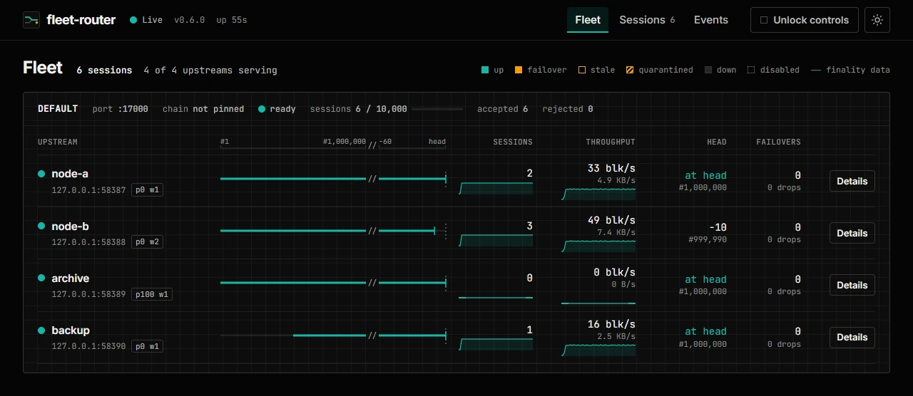
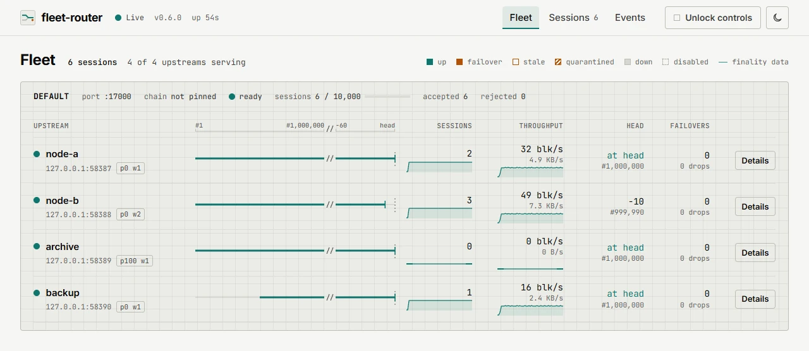

- route set
- failover
- stale
- offline
- quarantined
One WebSocket in front of the whole SHiP fleet.
fleet-router is a Rust reverse proxy and load balancer for Antelope State History nodes. Hyperion, Atomic and other indexers open a single connection. The router picks a healthy upstream, and when that node drops it resumes the stream at the next block on another one. No reconnect, no duplicate blocks.
cargo install fleet-router
Also as Docker image and prebuilt binaries. MIT licensed. Source on GitHub · crates.io · Changelog
How a stream survives a node drop
Every client session is a route across block sections. The router sets it, watches it, and re-sets it when the node behind it fails.
-
Connect
The client opens one WebSocket to the router. The router selects an upstream and forwards that upstream's ABI, so the client talks to a single SHiP endpoint.
-
Route
Selection prefers an upstream whose trace range covers the requested block, then the lowest
prioritytier, then the fewest connections per unit ofweight. Aget_blocks_request_v1withfetch_finality_dataonly goes to a node whose finality range covers that block. -
Fail over
When the active upstream closes, errors or goes silent, the client socket stays open. A quiet upstream is pinged and abandoned if nothing comes back within 4 s. The router re-sends the in-flight
get_blocksfrom the next block on another suitable node with the outstanding credit, including acknowledgements received during the swap. -
De-duplicate
Blocks the client already received are dropped on replay. The client never reconnects and never sees the same block twice.
The bound
A session that keeps dying on an unclean drop at the same next block backs off from 100 ms, doubling to 3.2 s, and is closed with WebSocket code 1011 and the reason block K unavailable on all upstreams after five such drops. An idle timeout or a clean close still fails over and does not count. The bound is always on. Opt-in block_failure_quarantine additionally skips that upstream for K..K+range after repeated strikes, without marking it offline.
What it does
The legend for the panel above, in the order an operator meets it.
- Single resilient endpoint
ws://router:17000 - Hyperion, Atomic and other indexers share one WebSocket instead of each consumer pinning itself to one SHiP node.
- Range-aware least-connections
trace_begin_block … trace_end_block - Checks coverage for the requested traces, chain state and finality data, then chooses among suitable upstreams using priority, weight and load. See the routing contract.
- Upstream preference
priority · weight - Among nodes that can serve a request equally well, the router uses the lowest
prioritytier, then the fewest connections per unit ofweight. A high priority makes a node a last resort, and failover still moves off a failed preferred node to a backup that covers the block. - Transparent failover
resume at next block - On upstream loss the router reconnects to another suitable node, resumes
get_blocksat the next block, de-duplicates replayed blocks and preserves the client's outstanding credit. That includes a node that goes silent without closing the connection, such as a pulled cable or a frozen VM: a quiet upstream is pinged and abandoned afterupstream_liveness_timeout_ms(4 s by default). - Stale-upstream deprioritization
upstream_stale = 1 - An upstream that stops advancing its chain state is flagged stale and deprioritized when routing. It is not hard-excluded.
- Many networks, one process
listeners[] · /ready/<name> listenersserves each chain on its own port with its own upstream pool,chain_id, connection cap and/ready/<name>check.chain_idverificationrequire_chain_id- An upstream whose reported
chain_iddisagrees with the pin or the rest of its pool stays offline. Nodes that omitchain_id, such as FIO and other EOSIO 2.0 builds, stay usable unlessrequire_chain_idis set. - Bounded failover and quarantine
block_failure_quarantine - Repeated unclean drops at the same next block are bounded: the session closes with code 1011 after five. Opt-in
block_failure_quarantineskips a corrupted SHiP log range without marking the node offline. - Live dashboard
/ui/ · /status · /api/v1 - Opt-in fleet view with block ranges, sessions, throughput, failovers and an event log, plus a no-JavaScript status page and a JSON API with a server-sent events stream. Off by default.
- Operator controls
drain · disable · move - With a control token set, drain an upstream for maintenance, disable or enable it, change its priority and weight at runtime, clear its quarantines, or move a single session. A drain uses the normal failover, so clients stay connected.
- Prometheus metrics
/metrics · server, endpoint, listener - Per-upstream series carry
serverandendpointlabels, pluslistenerin multi-listener mode, with gauges for the start and end of each SHiP range. - Upstream and client TLS
wss:// · https:// - Optional TLS to SHiP nodes, verified with rustls against the OS trust store. Client listeners can also terminate TLS, with SNI certificates and automatic certificate renewal. See TLS configuration.
- Live configuration reload
validate · save · apply - Add or replace listeners and upstreams through the authenticated configuration editor. New connections use the new configuration; existing streams keep their previous pool until they close. See reload behavior.
- HTTP chain API
/v1/chain/* - An optional HTTP or HTTPS listener routes block requests across archive and live nodes, with state calls on live upstreams and read-only defaults. Dedicated HTTP-only live nodes are supported. See the chain API reference.
- Wire Network
sysio::abi/1.* - Version 0.8.1 accepts Wire's SHiP ABI using
rs_abieos0.7.0. See upgrading and verifying a Wire deployment. - Resource safety
max_connections · idle_timeout_ms - Connection cap, handshake and idle timeouts, and a bounded maximum WebSocket message size.
- Runs as a service
systemd · Docker · launchd - Ships systemd units for one process or one process per network, with a raised open-file limit and basic sandboxing. The operations guide also covers the Docker restart policy, launchd on macOS and a service wrapper on Windows.
- Graceful shutdown
SIGINT · SIGTERM - Handles
SIGINTandSIGTERMwith a bounded drain and WebSocket close frames to connected clients. Written in Rust on tokio and tokio-tungstenite; ABI checks use pure-Rustrs_abieos, solibclangis not required.
Install
Three ways to get the binary. All of them are the same single executable.
crates.io
Requires Rust 1.99 or newer. Building wss:// support needs a C compiler and CMake; they are not required at runtime.
cargo install fleet-router
Docker
Public on GitHub Container Registry; no login is needed to pull it. Pin a release tag for rollout. The image runs as a non-root user.
docker pull ghcr.io/eosrio/fleet-router:0.8.1
Prebuilt binaries
Each GitHub Release ships archives for these targets.
x86_64-unknown-linux-gnuLinux x86_64aarch64-apple-darwinmacOS arm64x86_64-apple-darwinmacOS x86_64x86_64-pc-windows-msvcWindows x86_64
Quick start
-
Write a sample config
fleet-router config init ./config.json -
Validate it and test upstream connectivity
fleet-router config test ./config.json -
Run the proxy
fleet-router run --config ./config.json
To keep it running across reboots, install the systemd unit from deploy/. See Run as a service for systemd, Docker, launchd and Windows.
Serving frozen history alongside live nodes? Deploy frozen SHiP archives with Hyperion Tools and a single stitched endpoint.
Two chains, one process
A multi-listener config.json. Each listener is its own port, pool and readiness check. Pin chain_id on every listener.
{
"listen_address": "0.0.0.0",
"upstream_reconnect_ms": 3000,
"upstream_monitoring_ms": 5000,
"upstream_status_ms": 5000,
"metrics_port": 9090,
"listeners": [
{
"name": "eos",
"listen_port": 17000,
"chain_id": "aca376f206b8fc25a6ed44dbdc66547c36c6c33e3a119ffbeaef943642f0e906",
"servers": [
{ "name": "EOS SHiP 1", "endpoint": "10.0.1.10:8080", "enabled": true },
{ "name": "EOS SHiP 2", "endpoint": "10.0.1.11:8080", "enabled": true, "weight": 2 },
{ "name": "EOS SHiP backup", "endpoint": "10.0.1.12:8080", "enabled": true, "priority": 10 }
]
},
{
"name": "wax",
"listen_port": 17001,
"chain_id": "1064487b3cd1a897ce03ae5b6a865651747e2e152090f99c1d19d44e01aea5a4",
"servers": [
{ "name": "WAX SHiP 1", "endpoint": "10.0.2.10:8080", "enabled": true },
{ "name": "WAX SHiP 2", "endpoint": "10.0.2.11:8080", "enabled": true }
]
}
]
}listeners[]- One ingress port per network, each with an isolated upstream pool and its own
/ready/<name>. chain_id- Upstreams reporting a different
chain_idare kept offline. Older nodes that omit it stay usable unlessrequire_chain_idis set. endpoint- A bare
host:portis dialed asws://. Usewss://host:portwhen the node serves TLS. priority·weight- Optional per server. Lower
priorityis preferred (default0);weight(default1) shares load within a tier. Here SHiP 2 takes twice the sessions of SHiP 1, and the backup serves only when neither can. *_msintervals- Reconnect, monitoring and status polling. Lower values detect failures faster at the cost of more polling traffic.
metrics_port- Enables the HTTP endpoint for
/health,/readyand/metrics, and for the dashboard when it is enabled. Omit it to run without one. - Single-port mode
- Replace
listenerswith top-levellisten_portandserversfor one chain. The two modes are mutually exclusive.
Health and metrics
Set metrics_port and the five states the panel shows, plus operator-disabled, become HTTP answers and Prometheus series.
| Endpoint | Answer |
|---|---|
/health | 200 while the process is running. |
/ready | 200 when the listener has an eligible online upstream; stitched listeners require a live upstream. Every listener must be ready in multi-listener mode. Otherwise 503. Readiness and history coverage. |
/ready/<name> | 200 or 503 for that listener, or 404 if the name is unknown. |
/metrics | Prometheus text exposition of router and upstream state. |
/ui//status/api/v1 | The dashboard, status page and JSON API, only with dashboard.enabled. |
Exported series
Each per-upstream series carries server and endpoint labels, plus listener in multi-listener mode. fleet_router_up is a process gauge with no labels.
fleet_router_up
fleet_router_upstream_up{endpoint,server}
fleet_router_upstream_stale{endpoint,server}
fleet_router_active_connections{endpoint,server}
fleet_router_upstream_trace_begin_block{endpoint,server}
fleet_router_upstream_chain_state_begin_block{endpoint,server}
fleet_router_upstream_chain_state_end_block{endpoint,server}
fleet_router_upstream_finality_data_begin_block{endpoint,server}
fleet_router_upstream_finality_data_end_block{endpoint,server}
fleet_router_upstream_block_failures_total{endpoint,server}
fleet_router_upstream_quarantined{endpoint,server}
fleet_router_upstream_quarantine_block{endpoint,server}
fleet_router_upstream_operator_disabled{endpoint,server}
fleet_router_upstream_priority{endpoint,server}
fleet_router_upstream_weight{endpoint,server}- route set
upstream_upis 1 and the stream is on this node.- failover
- An unclean mid-stream drop increments
block_failures_total; the session moves to another node. - stale
upstream_staleis 1: chain state stopped advancing. Deprioritized, still online.- offline
upstream_upis 0: unreachable, a missed status deadline, or achain_idmismatch.- quarantined
upstream_quarantinedis 1 andquarantine_blocknames the skipped block. Online for every other range.- disabled
upstream_operator_disabledis 1: drained or disabled through the control API. Takes no new sessions until enabled.
Logging is tracing, controlled with RUST_LOG (default info).
Live dashboard and controls
Opt-in. Set dashboard.enabled and the metrics port also serves a live fleet view, a plain status page and a JSON API. Add a control token to manage the fleet from the same page.


"metrics_address": "127.0.0.1",
"metrics_port": 9090,
"dashboard": {
"enabled": true,
"control_token_file": "/etc/fleet-router/control.token"
}- Drain
- Moves live sessions off an upstream with the normal failover, so clients stay connected. A session moves only to a node whose range covers its next block, so draining the only archive node leaves its history readers in place.
- Disable, enable, tune
- Take an upstream out of rotation, bring it back, change its priority and weight, or clear its quarantines. Runtime changes are not written back to the config.
- Move or close a session
- Send one client stream to another upstream at its next block, or close it.
- Access
- Read views need no token. Controls need the bearer token from
control_token_fileorFLEET_ROUTER_CONTROL_TOKEN. Dashboard routes answer only to an IP address,localhostor a name inallowed_hosts, which blocks DNS rebinding.
The full contract is in the API reference.